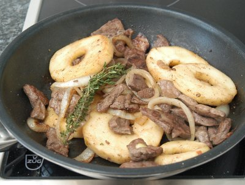

| Zutaten für 4 Personen: | |
| 500 g | Schweineleber am Stück |
| 3 dl | Milch |
| 2 | Zwiebeln |
| Salz, Pfeffer | |
| Thymian | |
| 2 | Äpfel |
| 3 EL | Butter |
Zubereitungszeit: 25 Minuten
Bratzeit: 2-3 Minuten
Leber in dünne Stengelchen oder Würfelchen schneiden.
Zwiebeln in Ringe schneiden.
Äpfel schälen, in Schnitze oder Ringe schneiden.
Leber und Zwiebeln in 1 EL Butter andünsten.
Die Äpfel darunter mischen. Kräftig mit Salz, Pfeffer und Thymian würzen. Nach kurzem braten servieren.
Dieses Gericht lässt sich auch mit Kalbs- Rinds- Kaninchen- oder Geflügelleber zubereiten. Diese Lebern brauchen nicht in Milch eingelegt zu werden. Schweineleber vorgängig 2 Stunden in Milch einlegen.
Herbert Eigenmann, Code: LBS
Pro Person: 341 Kalorien, 1427 Joule
Geniessbar aber nichts besonderes. RE, 6.2.2000
OK für Leute die gerne Leber essen. RE 5.6.2010
Astreines Leberli-Gericht. RE 23.11.2019
@LINKBACK_TAG@ @WAKELOCK@